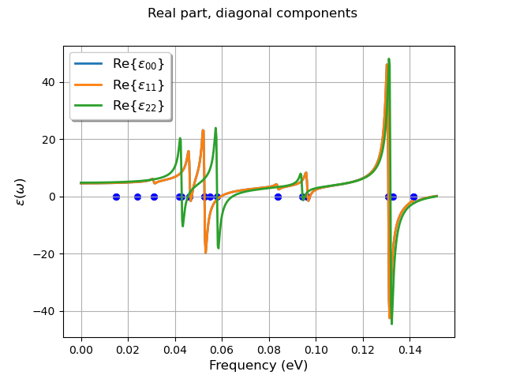

<!DOCTYPE html>

<html xmlns="http://www.w3.org/1999/xhtml">
  <head>
    <meta charset="utf-8" />
    <title>Infrared spectrum of AlAs &#8212; abipy 0.8.0 documentation</title>
    <link rel="stylesheet" href="../_static/bootstrap-sphinx.css" type="text/css" />
    <link rel="stylesheet" href="../_static/pygments.css" type="text/css" />
    <link rel="stylesheet" type="text/css" href="../_static/graphviz.css" />
    <link rel="stylesheet" type="text/css" href="../_static/gallery.css" />
    <link rel="stylesheet" type="text/css" href="../_static/my_style.css" />
    <link rel="stylesheet" type="text/css" href="../_static/jupyter-sphinx.css" />
    <script type="text/javascript" id="documentation_options" data-url_root="../" src="../_static/documentation_options.js"></script>
    <script type="text/javascript" src="../_static/jquery.js"></script>
    <script type="text/javascript" src="../_static/underscore.js"></script>
    <script type="text/javascript" src="../_static/doctools.js"></script>
    <script type="text/javascript" src="../_static/language_data.js"></script>
    <script type="text/javascript" src="https://cdnjs.cloudflare.com/ajax/libs/require.js/2.3.4/require.min.js"></script>
    <script type="text/javascript" src="https://unpkg.com/@jupyter-widgets/html-manager@^0.18.0/dist/embed-amd.js"></script>
    <script async="async" type="text/javascript" src="https://cdnjs.cloudflare.com/ajax/libs/mathjax/2.7.5/latest.js?config=TeX-AMS-MML_HTMLorMML"></script>
    <link rel="index" title="Index" href="../genindex.html" />
    <link rel="search" title="Search" href="../search.html" />
    <link rel="next" title="SCR matrix" href="plot_scr_matrix.html" />
    <link rel="prev" title="Thermodinamic properties" href="plot_phthermo.html" />
<meta charset='utf-8'>
<meta http-equiv='X-UA-Compatible' content='IE=edge,chrome=1'>
<meta name='viewport' content='width=device-width, initial-scale=1.0, maximum-scale=1'>
<meta name="apple-mobile-web-app-capable" content="yes">
<script type="text/javascript" src="../_static/js/jquery-1.11.0.min.js "></script>
<script type="text/javascript" src="../_static/js/jquery-fix.js "></script>
<script type="text/javascript" src="../_static/bootstrap-3.3.7/js/bootstrap.min.js "></script>
<script type="text/javascript" src="../_static/bootstrap-sphinx.js "></script>

  </head><body>

  <div id="navbar" class="navbar navbar-default navbar-fixed-top">
    <div class="container">
      <div class="navbar-header">
        <!-- .btn-navbar is used as the toggle for collapsed navbar content -->
        <button type="button" class="navbar-toggle" data-toggle="collapse" data-target=".nav-collapse">
          <span class="icon-bar"></span>
          <span class="icon-bar"></span>
          <span class="icon-bar"></span>
        </button>
        <a class="navbar-brand" href="../index.html">
          abipy</a>
        <span class="navbar-text navbar-version pull-left"><b>0.8.0</b></span>
      </div>

        <div class="collapse navbar-collapse nav-collapse">
          <ul class="nav navbar-nav">
            
            
              <li class="dropdown globaltoc-container">
  <a role="button"
     id="dLabelGlobalToc"
     data-toggle="dropdown"
     data-target="#"
     href="../index.html">Site <b class="caret"></b></a>
  <ul class="dropdown-menu globaltoc"
      role="menu"
      aria-labelledby="dLabelGlobalToc"><ul>
<li class="toctree-l1"><a class="reference internal" href="../features.html">Overview</a></li>
<li class="toctree-l1"><a class="reference internal" href="../installation.html">Getting AbiPy</a></li>
<li class="toctree-l1"><a class="reference internal" href="../changelog.html">Changelog</a></li>
<li class="toctree-l1"><a class="reference internal" href="../zzbiblio.html">Bibliography</a></li>
</ul>
<ul class="current">
<li class="toctree-l1"><a class="reference internal" href="../scripts/index.html">Scripts</a></li>
<li class="toctree-l1"><a class="reference internal" href="../graphical_interface.html">Graphical interface</a></li>
<li class="toctree-l1 current"><a class="reference internal" href="index.html">AbiPy Gallery</a></li>
<li class="toctree-l1"><a class="reference internal" href="../postprocessing_howto.html">Post-processing How-To</a></li>
</ul>
<ul>
<li class="toctree-l1"><a class="reference internal" href="../workflows/taskmanager.html">TaskManager</a></li>
<li class="toctree-l1"><a class="reference internal" href="../workflows/manager_examples.html">Manager Examples</a></li>
<li class="toctree-l1"><a class="reference internal" href="../flow_gallery/index.html">Flow Gallery</a></li>
<li class="toctree-l1"><a class="reference internal" href="../flows_howto.html">Flows How-To</a></li>
</ul>
<ul>
<li class="toctree-l1"><a class="reference internal" href="../api/index.html">API documentation</a></li>
<li class="toctree-l1"><a class="reference internal" href="../coding_guide.html">Coding guide</a></li>
<li class="toctree-l1"><a class="reference internal" href="../README.html">Documenting AbiPy</a></li>
</ul>
</ul>
</li>
              
                <li class="dropdown">
  <a role="button"
     id="dLabelLocalToc"
     data-toggle="dropdown"
     data-target="#"
     href="#">Page <b class="caret"></b></a>
  <ul class="dropdown-menu localtoc"
      role="menu"
      aria-labelledby="dLabelLocalToc"><ul>
<li><a class="reference internal" href="#">Infrared spectrum of AlAs</a></li>
</ul>
</ul>
</li>
              
            
            
              
                
  <li>
    <a href="plot_phthermo.html" title="Previous Chapter: Thermodinamic properties"><span class="glyphicon glyphicon-chevron-left visible-sm"></span><span class="hidden-sm hidden-tablet">&laquo; Thermodinamic...</span>
    </a>
  </li>
  <li>
    <a href="plot_scr_matrix.html" title="Next Chapter: SCR matrix"><span class="glyphicon glyphicon-chevron-right visible-sm"></span><span class="hidden-sm hidden-tablet">SCR matrix &raquo;</span>
    </a>
  </li>
              
            
            
            
            
              <li class="hidden-sm">
<div id="sourcelink">
  <a href="../_sources/gallery/plot_phonons_infrared.rst.txt"
     rel="nofollow">Source</a>
</div></li>
            
          </ul>

          
            
<form class="navbar-form navbar-right" action="../search.html" method="get">
 <div class="form-group">
  <input type="text" name="q" class="form-control" placeholder="Search" />
 </div>
  <input type="hidden" name="check_keywords" value="yes" />
  <input type="hidden" name="area" value="default" />
</form>
          
        </div>
    </div>
  </div>

<div class="container">
  <div class="row">
    <div class="body col-md-12 content" role="main">
      
  <div class="sphx-glr-download-link-note admonition note">
<p class="admonition-title">Note</p>
<p>Click <a class="reference internal" href="#sphx-glr-download-gallery-plot-phonons-infrared-py"><span class="std std-ref">here</span></a> to download the full example code</p>
</div>
<div class="sphx-glr-example-title section" id="infrared-spectrum-of-alas">
<span id="sphx-glr-gallery-plot-phonons-infrared-py"></span><h1>Infrared spectrum of AlAs<a class="headerlink" href="#infrared-spectrum-of-alas" title="Permalink to this headline">¶</a></h1>
<p>This example shows how to plot the infrared spectrum of a polar semiconductor (AlAs)
from the DDB file  See tutorial/lesson_rf2.html</p>
<p>For a command line interfase, use:</p>
<blockquote>
<div><p>abiview.py ddb_ir in_DDB</p>
</div></blockquote>
<ul class="sphx-glr-horizontal">
<li>
</li>
<li>
</li>
<li>
</li>
</ul>
<p class="sphx-glr-script-out">Out:</p>
<div class="sphx-glr-script-out highlight-none notranslate"><div class="highlight"><pre><span></span>Creating temporary file: /var/folders/nc/k69spyd12qv2tk3stk2xrxg40000gr/T/tmpj5j_12wemp-7000_DDB
ANADDB INPUT:
 # ANADDB input for phonon frequencies at one q-point
 ifcflag 0
 asr 2
 chneut 1
 dipdip 1
 nph1l 1
 qph1l
 0 0 0
 1
 dieflag 1
workdir: /var/folders/nc/k69spyd12qv2tk3stk2xrxg40000gr/T/tmpx229av26
================================= Structure =================================
Full Formula (Si3 O6)
Reduced Formula: SiO2
abc   :   4.949906   4.949906   5.440897
angles:  90.000000  90.000000 120.000000
Sites (9)
  #  SP           a         b         c
---  ----  --------  --------  --------
  0  Si    0.528855  0         0.833333
  1  Si    0.471145  0.471145  0.5
  2  Si    0         0.528855  0.166667
  3  O     0.413167  0.147706  0.620242
  4  O     0.852294  0.265462  0.953576
  5  O     0.734538  0.586833  0.286909
  6  O     0.265462  0.852294  0.046424
  7  O     0.147706  0.413167  0.379758
  8  O     0.586833  0.734538  0.713091

Abinit Spacegroup: spgid: 0, num_spatial_symmetries: 6, has_timerev: True, symmorphic: True

============================ Oscillator strength ============================
Real part in Cartesian coordinates. a.u. units; 1 a.u. = 253.2638413 m3/s2. Set to zero below 1.00e-06.
                          xx                      yy                      zz   yz   xz   xy
mode
0                        0.0                     0.0                     0.0  0.0  0.0  0.0
1                        0.0                     0.0                     0.0  0.0  0.0  0.0
2                        0.0                     0.0                     0.0  0.0  0.0  0.0
3                        0.0                     0.0                     0.0  0.0  0.0  0.0
4                        0.0                     0.0                     0.0  0.0  0.0  0.0
5                        0.0                     0.0                     0.0  0.0  0.0  0.0
6      4.424721148949279e-06                     0.0                     0.0  0.0  0.0  0.0
7                        0.0   4.424721149168184e-06                     0.0  0.0  0.0  0.0
8                        0.0                     0.0                     0.0  0.0  0.0  0.0
9                        0.0                     0.0  0.00011308265177993388  0.0  0.0  0.0
10      6.99279225885258e-05                     0.0                     0.0  0.0  0.0  0.0
11                       0.0   6.992792259728371e-05                     0.0  0.0  0.0  0.0
12                       0.0  0.00019407122610181338                     0.0  0.0  0.0  0.0
13    0.00019407122610603044                     0.0                     0.0  0.0  0.0  0.0
14                       0.0                     0.0                     0.0  0.0  0.0  0.0
15                       0.0                     0.0  0.00020880483319441859  0.0  0.0  0.0
16                       0.0  1.3565139019263169e-05                     0.0  0.0  0.0  0.0
17    1.3565139019054824e-05                     0.0                     0.0  0.0  0.0  0.0
18                       0.0                     0.0   7.533020286384725e-05  0.0  0.0  0.0
19                       0.0   8.105029372804786e-05                     0.0  0.0  0.0  0.0
20     8.105029372653947e-05                     0.0                     0.0  0.0  0.0  0.0
21                       0.0   0.0009908321011291887                     0.0  0.0  0.0  0.0
22     0.0009908321011313983                     0.0                     0.0  0.0  0.0  0.0
23                       0.0                     0.0    0.001043437374601259  0.0  0.0  0.0
24                       0.0                     0.0                     0.0  0.0  0.0  0.0
25    1.2586418335231959e-05                     0.0                     0.0  0.0  0.0  0.0
26                       0.0  1.2586418332906106e-05                     0.0  0.0  0.0  0.0

============================= Dielectric Tensors =============================
Electronic dielectric tensor (eps_inf) in Cartesian coordinates. Set to zero below 1.00e-03.
         x        y         z
x  2.45581  0.00000  0.000000
y  0.00000  2.45581  0.000000
z  0.00000  0.00000  2.486826

Zero-frequency dielectric tensor (eps_zero) in Cartesian coordinates. Set to zero below 1.00e-03.
          x         y         z
x  4.564213  0.000000  0.000000
y  0.000000  4.564213  0.000000
z  0.000000  0.000000  4.783768
/Users/gmatteo/git_repos/pymatgen/pymatgen/util/plotting.py:550: UserWarning: Matplotlib is currently using agg, which is a non-GUI backend, so cannot show the figure.
  plt.show()
/Users/gmatteo/git_repos/pymatgen/pymatgen/util/plotting.py:550: UserWarning: Matplotlib is currently using agg, which is a non-GUI backend, so cannot show the figure.
  plt.show()
/Users/gmatteo/git_repos/pymatgen/pymatgen/util/plotting.py:550: UserWarning: Matplotlib is currently using agg, which is a non-GUI backend, so cannot show the figure.
  plt.show()
</pre></div>
</div>
<div class="line-block">
<div class="line"><br /></div>
</div>
<div class="highlight-default notranslate"><div class="highlight"><pre><span></span><span class="kn">import</span> <span class="nn">os</span>
<span class="kn">import</span> <span class="nn">abipy.data</span> <span class="k">as</span> <span class="nn">abidata</span>

<span class="kn">from</span> <span class="nn">abipy</span> <span class="kn">import</span> <span class="n">abilab</span>

<span class="c1"># Open DDB file for alpha-SiO2 taken from https://materialsproject.org/materials/mp-7000/</span>
<span class="n">filepath</span> <span class="o">=</span> <span class="n">os</span><span class="o">.</span><span class="n">path</span><span class="o">.</span><span class="n">join</span><span class="p">(</span><span class="n">abidata</span><span class="o">.</span><span class="n">dirpath</span><span class="p">,</span> <span class="s2">&quot;refs&quot;</span><span class="p">,</span> <span class="s2">&quot;mp-7000_DDB.bz2&quot;</span><span class="p">)</span>
<span class="n">ddb</span> <span class="o">=</span> <span class="n">abilab</span><span class="o">.</span><span class="n">abiopen</span><span class="p">(</span><span class="n">filepath</span><span class="p">)</span>

<span class="c1"># Invoke anaddb to compute dielectric tensor and oscillator strength.</span>
<span class="n">tgen</span> <span class="o">=</span> <span class="n">ddb</span><span class="o">.</span><span class="n">anaget_dielectric_tensor_generator</span><span class="p">(</span><span class="n">asr</span><span class="o">=</span><span class="mi">2</span><span class="p">,</span> <span class="n">chneut</span><span class="o">=</span><span class="mi">1</span><span class="p">,</span> <span class="n">dipdip</span><span class="o">=</span><span class="mi">1</span><span class="p">,</span> <span class="n">verbose</span><span class="o">=</span><span class="mi">1</span><span class="p">)</span>
<span class="nb">print</span><span class="p">(</span><span class="n">tgen</span><span class="p">)</span>

<span class="c1"># Set phonon damping factor in eV (full width).</span>
<span class="n">gamma_ev</span> <span class="o">=</span> <span class="mf">1e-3</span>

<span class="c1"># Plot IR spectrum in Cartesian coordinates.</span>
<span class="n">tgen</span><span class="o">.</span><span class="n">plot_all</span><span class="p">(</span><span class="n">gamma_ev</span><span class="o">=</span><span class="n">gamma_ev</span><span class="p">,</span> <span class="n">title</span><span class="o">=</span><span class="s2">&quot;Diagonal and off-diagonal components&quot;</span><span class="p">)</span>

<span class="n">tgen</span><span class="o">.</span><span class="n">plot</span><span class="p">(</span><span class="n">component</span><span class="o">=</span><span class="s2">&quot;diag&quot;</span><span class="p">,</span> <span class="n">reim</span><span class="o">=</span><span class="s2">&quot;re&quot;</span><span class="p">,</span> <span class="n">gamma_ev</span><span class="o">=</span><span class="n">gamma_ev</span><span class="p">,</span> <span class="n">title</span><span class="o">=</span><span class="s2">&quot;Real part, diagonal components&quot;</span><span class="p">)</span>

<span class="n">tgen</span><span class="o">.</span><span class="n">plot</span><span class="p">(</span><span class="n">component</span><span class="o">=</span><span class="s2">&quot;diag&quot;</span><span class="p">,</span> <span class="n">reim</span><span class="o">=</span><span class="s2">&quot;im&quot;</span><span class="p">,</span> <span class="n">gamma_ev</span><span class="o">=</span><span class="n">gamma_ev</span><span class="p">,</span> <span class="n">title</span><span class="o">=</span><span class="s2">&quot;Imaginary part, diagonal components&quot;</span><span class="p">)</span>

<span class="n">ddb</span><span class="o">.</span><span class="n">close</span><span class="p">()</span>
</pre></div>
</div>
<p class="sphx-glr-timing"><strong>Total running time of the script:</strong> ( 0 minutes  1.812 seconds)</p>
<div class="sphx-glr-footer class sphx-glr-footer-example docutils container" id="sphx-glr-download-gallery-plot-phonons-infrared-py">
<div class="sphx-glr-download docutils container">
<p><a class="reference download internal" download="" href="../_downloads/a325bb1712d107af6b14549c5842204f/plot_phonons_infrared.py"><code class="xref download docutils literal notranslate"><span class="pre">Download</span> <span class="pre">Python</span> <span class="pre">source</span> <span class="pre">code:</span> <span class="pre">plot_phonons_infrared.py</span></code></a></p>
</div>
<div class="sphx-glr-download docutils container">
<p><a class="reference download internal" download="" href="../_downloads/d36605e48259db7595e7fe59e5f3304e/plot_phonons_infrared.ipynb"><code class="xref download docutils literal notranslate"><span class="pre">Download</span> <span class="pre">Jupyter</span> <span class="pre">notebook:</span> <span class="pre">plot_phonons_infrared.ipynb</span></code></a></p>
</div>
</div>
<p class="sphx-glr-signature"><a class="reference external" href="https://sphinx-gallery.github.io">Gallery generated by Sphinx-Gallery</a></p>
</div>


    </div>
      
  </div>
</div>
<footer class="footer">
  <div class="container">
    <p class="pull-right">
      <a href="#">Back to top</a>
      
    </p>
    <p>
        &copy; Copyright 2018, M. Giantomassi and the AbiPy group.<br/>
      Last updated on Feb 22, 2020.<br/>
      Created using <a href="http://sphinx-doc.org/">Sphinx</a> 2.2.0.<br/>
    </p>
  </div>
</footer>
  </body>
</html>